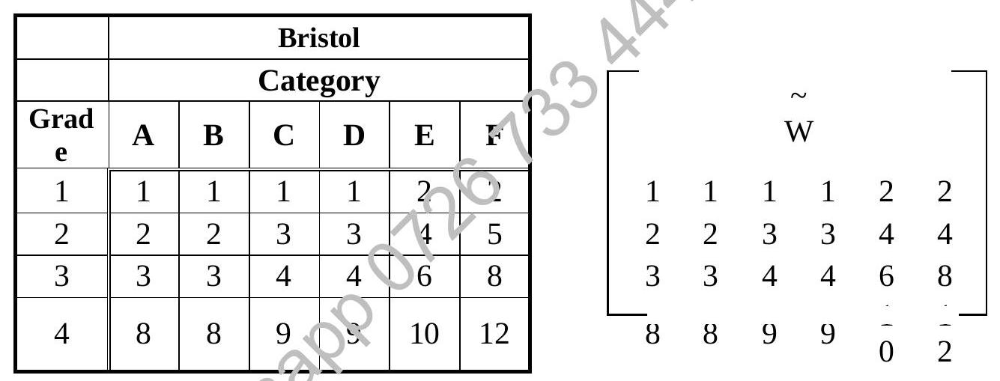

Chapter 7 : Data Structures (I)
Chapter Objectives
At the completion of this chapter, you would have learnt:
- the basic concepts of different data structures;
- how to acquire the ability to relate the types of data structures to real life application.
7.1 Introduction
A data structure specifies interrelationships among data. Each data structure has unique characteristics that make it different from any other.
The study of data structures involves learning about various interrelationships that data can have within each unique structure,
It is important for you to understand that the data maybe unchanged, while data structures do change.
The study of data structures is important for the system analyst and programmer in the designing of Database Management Systems.
7.2 The Concept of Unit Matrix
Constructing of Example Matrices for Four Grade of Staff
Below are tables showing the various number of staff for different grades and categories for two towns, together with their salaries.
By organising the numbers logically the following matrices are then constructed.
Andover Town.
| Grade | A | B | C | D | E | F |
|---|---|---|---|---|---|---|
| 1 | 0 | 2 | 5 | 16 | 0 | 0 |
| 2 | 2 | 12 | 15 | 27 | 5 | 1 |
| 3 | 0 | 0 | 24 | 15 | 3 | 2 |
| 4 | 0 | 0 | 10 | 9 | 2 | 1 |
Matrix A (Andover):
Bristol Town.
| Grade | A | B | C | D | E | F |
|---|---|---|---|---|---|---|
| 1 | 0 | 3 | 18 | 0 | 0 | 1 |
| 2 | 1 | 4 | 12 | 18 | 2 | 1 |
| 3 | 0 | 0 | 16 | 14 | 5 | 1 |
| 4 | 0 | 0 | 8 | 6 | 1 | 0 |
Matrix B (Bristol):
The wage matrix.
Matrix W (Wages):
Addition of Matrices
The resultant matrix T (Total Staff) can be gotten by simply adding the corresponding elements of the individual matrices. Hence by adding the matrices of the two towns the total staffs can be obtained.